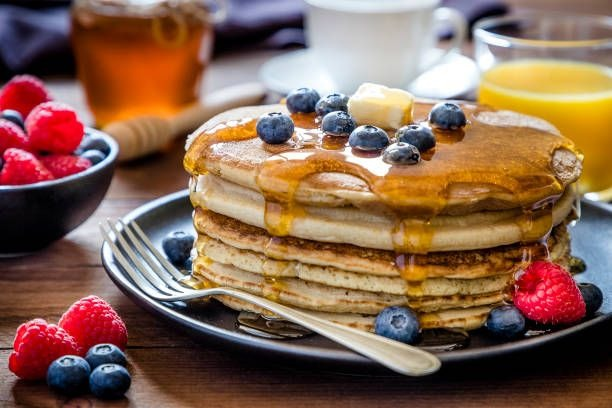

Pancake

Description
Fluffy and golden, pancakes are a breakfast favorite—delicious with syrup, fruit, or your favorite toppings.
Ingredients
- Flour
- Baking Powder
- Sugar
- Salt
- Milk
- Egg
- Butter
Steps
- Whisk 1 cup flour, 2 tbsp sugar, 1 tsp baking powder, and a pinch of salt.
- In another bowl, mix 1 cup milk, 1 egg, and 2 tbsp melted butter.
- Combine wet and dry ingredients until just mixed.
- Heat buttered skillet on medium. Pour ¼ cup batter per pancake. Flip when bubbles form. Cook 1–2 minutes more.
- Serve with butter, syrup, or fresh fruit. Optional: add chocolate chips or blueberries to the batter before cooking.